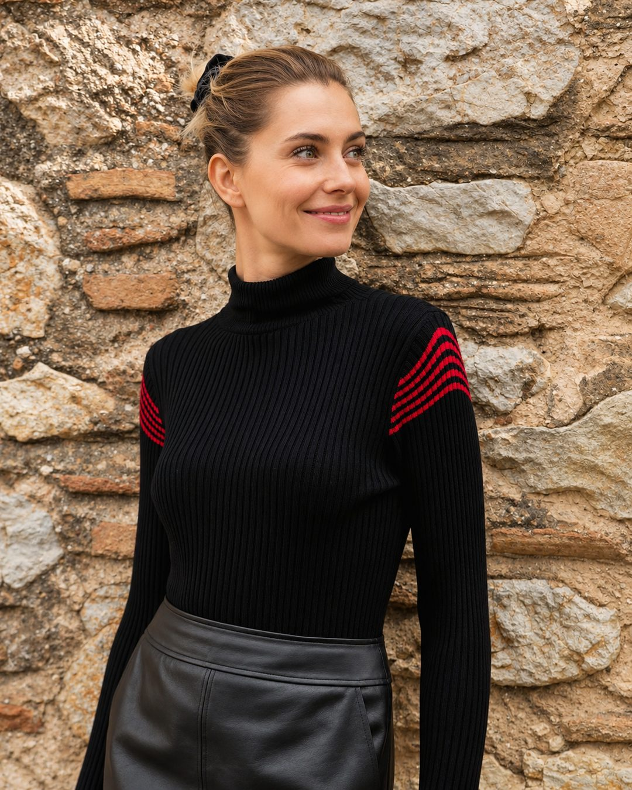

Fig. 1
Rib with shoulder stripes
A simple garment where the details make the difference.
- TurtleneckA high collar that follows the structure of the body.
- Contrast stripesRed stripes on the shoulder only, against the black.
- All-over ribA vertical structure that hugs the body.